TECHVESTVENTURES RISK ALERTS — Daily Mode — Emergent News Digest - November 3, 2026, 9:00 AM EST see all graphs click TVV Risk Center
TVV RESEARCH DIGEST — November 3, 2026 — 12 desks
1. Major Geopolitical Conflict Developments
- ★ US strikes Qeshm Island: US officials say American forces carried out limited "defensive" strikes on Iran's Qeshm Island on Monday, Nov 2, hitting an IRGC surface-to-air launcher after Iran fired at a US aircraft; they say it is not a resumption of major combat. Iranian media reported five explosions. President Trump had said there would be no strikes on Iran before the midterms. CNN · NBC News
- ★ Iran's answer: parliament speaker Ghalibaf said Tuesday Iran is at its highest defensive readiness and "the ball is in America's court to prevent war"; Iranian outlets say the target bank now includes US support bases in Europe. The IRGC claims it downed two US reconnaissance drones and an MQ-9; a US official called the drone claim false. Vice President Vance still says he is optimistic about a negotiated settlement, and Qatari mediators flew to Tehran Monday night. Euronews · CNBC
- ★ Ukraine, largest combined strike in weeks: Zelensky says Russia launched 289 drones, 17 ballistic and 59 cruise missiles overnight at power plants and substations in nine regions; DTEK says three of its five thermal plants are offline, and 180,000 people lost power in Zhytomyr. A Kharkiv hospital was hit (73 injured, per Zelensky). The Air Force reports 257 drones, 49 cruise and 3 ballistic missiles downed. Ukraine hit the Yaroslavl refinery; Moscow's mayor says nearly 500 drones bound for the capital region were destroyed. Peace talks are due to resume in a week. Reuters via Investing.com · Al Jazeera · NV
- ★ Zaporizhzhia death toll, conflicting counts: Russian glide bombs on an aid distribution point in Komyshuvakha on Nov 2 killed at least 31 with 48 missing, per the acting governor (Kyiv Independent); Euronews cites 26 then 29 dead. Kyiv Independent tallies 38 killed and 158 injured nationwide over the past day. The attack came right after the war's longest local truce, in Kherson, ended Sunday. Kyiv Independent · Euronews
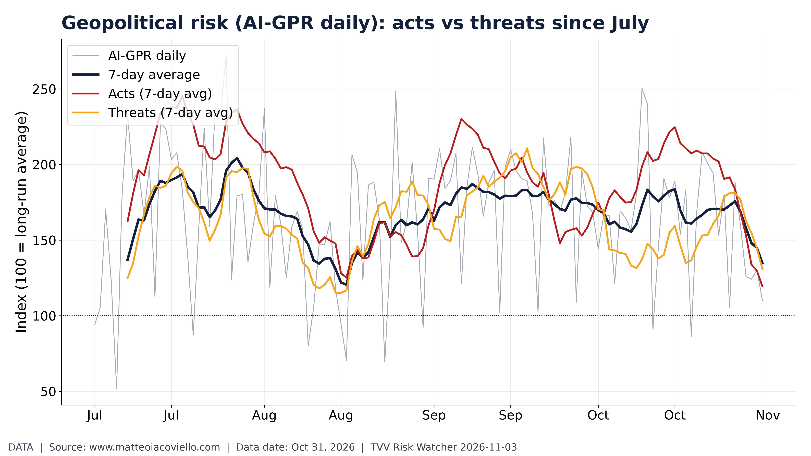
Geopolitical risk (AI-GPR daily): acts vs threats since July. Daily AI-GPR acts vs threats since July, still well above long-run average. Iacoviello, through Oct 31, 2026. [Data; data as of Oct 31, 2026] Source: matteoiacoviello.com data page
2. Major Terror / Security Incidents
- ★ Colombia: a truck bomb exploded near a military base in Planadas, Tolima, on Nov 2, killing four people, including a baby, and wounding several others. News as Facts (event log)
- ★ Bangladesh: two crude bombs exploded Monday night in Dhaka, under a footbridge in Sobhanbagh (8:30 PM) and beneath Agargaon Metro Station (9:15 PM); police reported no injuries and no suspects yet. The Business Standard
- ★ Cyber: the BYOD ransomware gang, also behind a recent hospital attack, listed Michigan State University; the university says evidence points to a credential-compromise event, not a central systems breach. A weekly tracker counts 252 claimed ransomware victims Oct 26-Nov 2, led by The Gentlemen with 51. The Record · Orbitaley weekly bulletin
- Energy-asset attacks: the oil-asset attack-risk index stays high on both the Middle East and Russia legs; today's Qeshm and Yaroslavl strikes are not yet in the data (see graph). Iacoviello AI-GPR
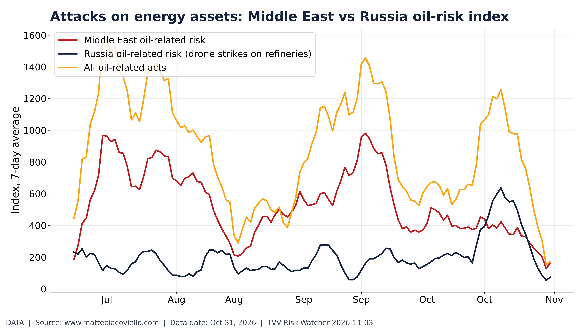
Attacks on energy assets: Middle East vs Russia oil-risk index. Oil-asset attack risk index: Middle East vs Russia (Ukrainian drone strikes). Iacoviello AI-GPR, through Oct 31, 2026. [Data; data as of Oct 31, 2026] Source: matteoiacoviello.com data page
3. Earthquakes and Eruptions
- ★ No new damaging M6+ quake since the last issue: Monday's strongest was an M5.3 in Greece, and the two M6.0 events on Nov 1 (Vanuatu; deep off Shima, Japan) had green alerts and no reported damage. Earthwatch247 · USGS
- Projection: USGS counts 22 M6+ and 206 M5+ quakes worldwide in the last 30 days; at the long-run rate that implies about a 71% chance of at least one M7+ in the next 30 days (see graph; projection, not a forecast of any place). USGS
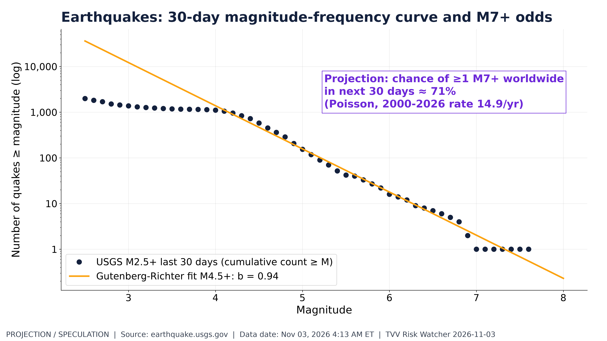
Earthquakes: 30-day magnitude-frequency curve and M7+ odds. Global 30-day quake counts by magnitude; ~71% chance of an M7+ next 30 days (projection). USGS, Nov 3, 2026. [Projection/Speculation; data as of Nov 03, 2026 4:13 AM ET] Source: earthquake.usgs.gov data page
4. Solar / Space Weather
- ★ No new major flare or geomagnetic storm since the last issue. Projection: NOAA's Solar Cycle 25 curve has sunspot numbers declining through 2030, but declining phases still produce large storms, as in May and October 2024 (see graph). NOAA SWPC
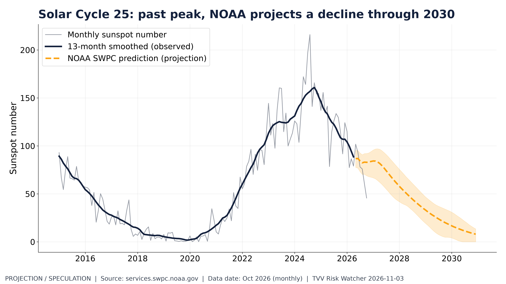
Solar Cycle 25: past peak, NOAA projects a decline through 2030. Observed sunspots vs NOAA's declining Solar Cycle 25 projection to 2030. NOAA SWPC, through Oct 2026. [Projection/Speculation; data as of Oct 2026 (monthly)] Source: services.swpc.noaa.gov data page
5. Critical Infrastructure / Transportation Disruptions
- ★ Grid stress: OpenAI's new Grid Protectors program pledges up to 1 GW of flexible demand at its planned Effingham County, Georgia campus, about the average load of 700,000 homes; under a 25-year deal Georgia Power can cut power to the site during peak periods. OpenAI · Axios
- ★ Ukraine's power grid: Odesa has moved to scheduled outages and DTEK lost three of five thermal plants after the overnight strikes (see 01 GEO). Reuters via Investing.com
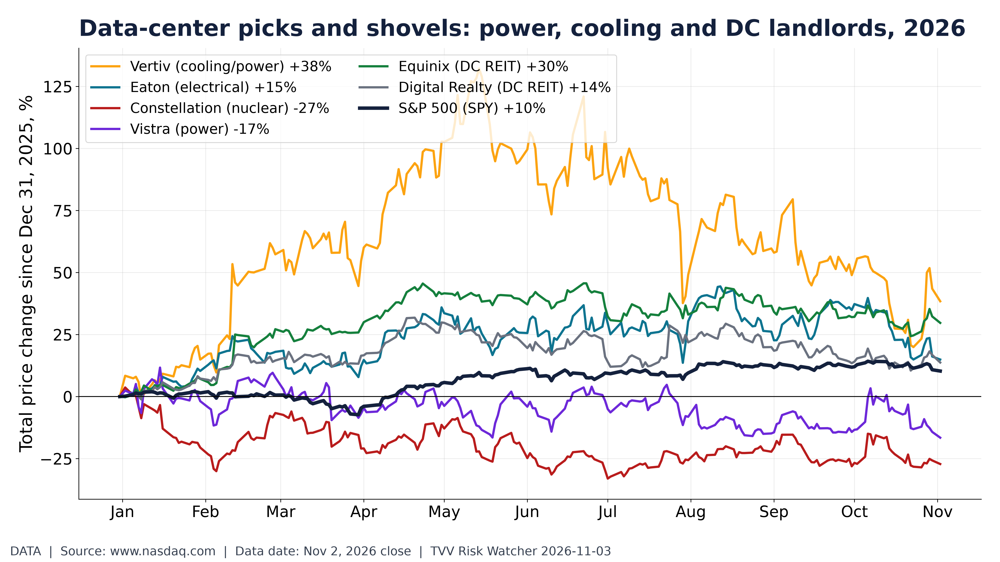
Data-center picks and shovels: power, cooling and DC landlords, 2026. 2026 price change: DC power/cooling suppliers vs data-center REITs and S&P 500. Nasdaq, Nov 2, 2026 close. [Data; data as of Nov 2, 2026 close] Source: nasdaq.com data page
6. Econo-Metrics
- ★ Oil whipsaw: after Monday's crash (WTI $96.46, -7.36%; Brent $104.77, -7.63%, the biggest WTI daily loss since July 27), prices rebounded on the Qeshm strike to Brent $106.52 (+1.67%) and WTI $98.51 (+2.13%) at 6:49 AM ET (see graph). Goldman raised its December forecasts to Brent $105 and WTI $94. Xinhua · CNBC · Economic Times
- ★ ISM manufacturing rose to 55.5 in October from 54.5 (consensus 54.5), the 10th straight month of expansion; production hit 59.0, the highest since November 2021, while prices paid stayed hot at 75.2. ISM via PR Newswire
- ★ Today 10 AM ET: September JOLTS, consensus about 7.10 million openings vs 7.1 million in August. The October jobs report follows Friday, Nov 6. Market odds: Polymarket gives about 15% odds that October payrolls fall, and 4.2% unemployment is the most likely bin; payroll bins are thin (see graph). Trade2Spike · BLS schedule
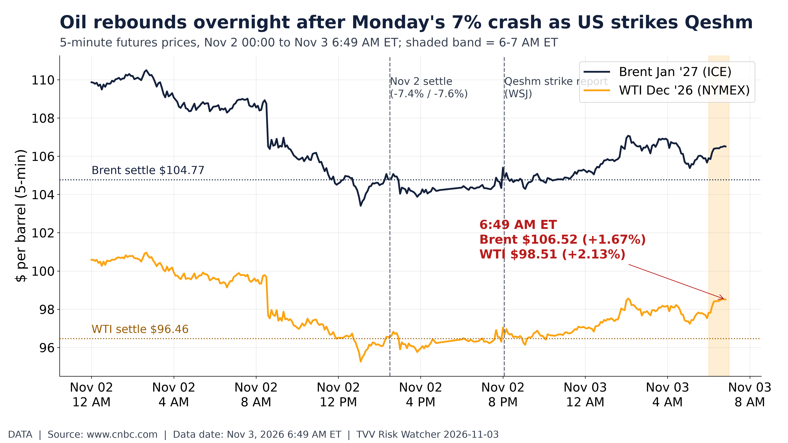
Oil rebounds overnight after Monday's 7% crash as US strikes Qeshm. Brent $106.52, WTI $98.51 at 6:49 AM ET, up ~2% after 7% Monday crash. CNBC/Yahoo, Nov 3. [Data; data as of Nov 3, 2026 6:49 AM ET] Source: cnbc.com data page
7. Epidemic / Bio-Metrics
- ★ No new Ebola SitRep since the last issue: the DRC outbreak stands at 10,467 confirmed cases and 5,103 deaths (SitRep 170). DRC Ministry of Health
- ★ Flu: CDC ILINet has influenza-like illness at 2.44% of outpatient visits in week 42, a low start to the 2026-27 season against the past four seasons (see graph). CDC FluView
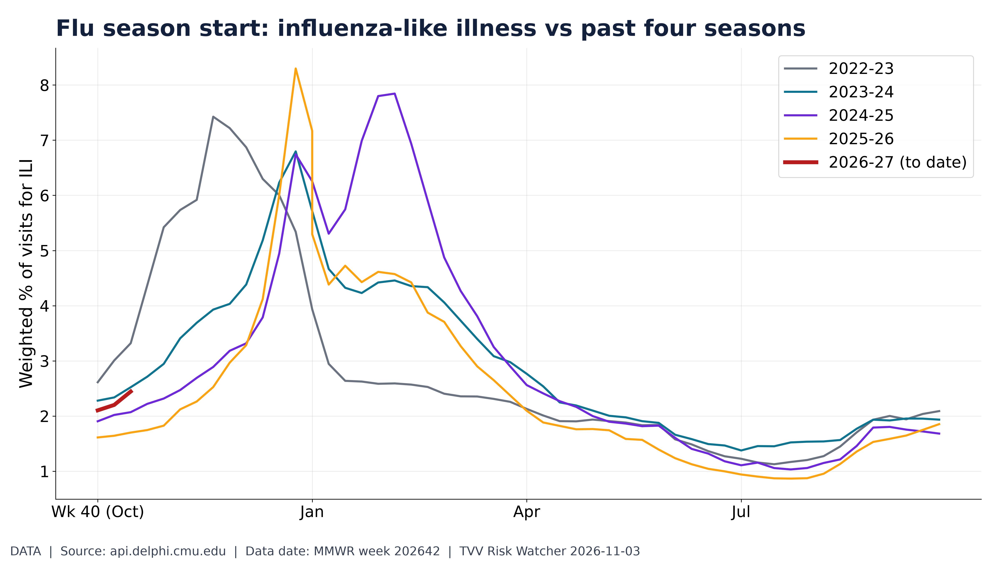
Flu season start: influenza-like illness vs past four seasons. ILI share of outpatient visits vs prior seasons; 2026-27 season starting low. CDC ILINet via Delphi, week 202642. [Data; data as of MMWR week 202642] Source: api.delphi.cmu.edu data page
8. Gold and Silver and Commodities
- ★ Gold below $4,000 for a second day: spot fell 1.1% to $3,904.69 and December futures to $3,914.70, giving back Monday's 2% gain as the oil rebound revived Fed-hike talk; Friday's yearly low was $3,870. Metals volatility is still running above stocks (see graph). CNBC · Yahoo Finance · Investing.com
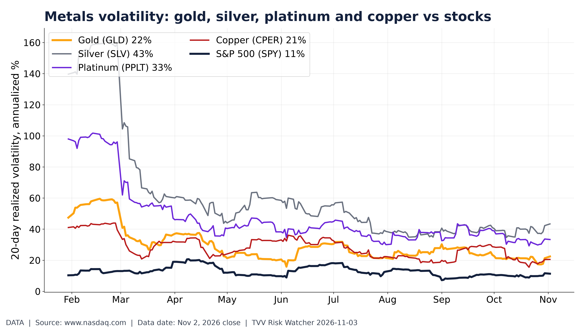
Metals volatility: gold, silver, platinum and copper vs stocks. 20-day realized volatility of metal ETFs vs S&P 500 in 2026. Nasdaq ETF prices, Nov 2, 2026 close. [Data; data as of Nov 2, 2026 close] Source: nasdaq.com data page
9. Stock Averages and Nasdaq Major Movers
- ★ Election Day premarket: Dow futures -0.8%, S&P 500 -0.2%, Nasdaq-100 +0.1% (about 7:30 AM ET), after Monday's Nasdaq -1% and S&P 500 -0.5% as money rotated out of tech while the Dow rose 0.4%. AMD reports after the close. Yahoo Finance · Investing.com · AP
- ★ Projection from history: in 12 midterm cycles since 1978, the S&P 500's median gain from Election Day to Dec 31 is +1.3%; 2026 has the added oil shock and Iran war, so the seasonal pattern is a guide, not a forecast (see graph). Cboe SPX history
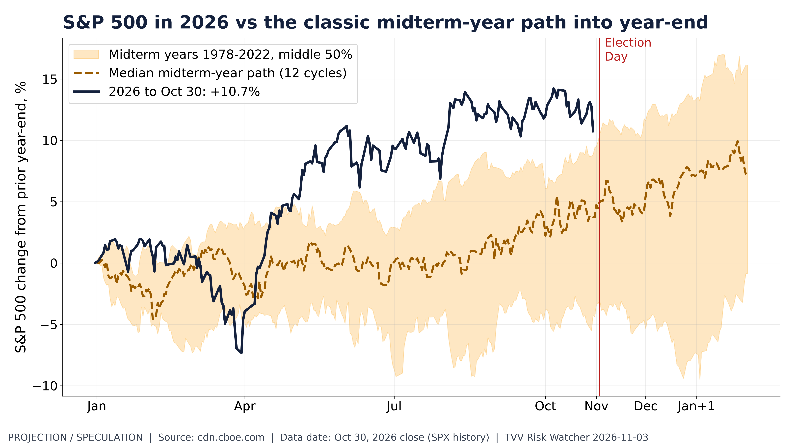
S&P 500 in 2026 vs the classic midterm-year path into year-end. 2026 S&P 500 vs 12 midterm years; median Election-Day-to-year-end gain +1.3%. Cboe, Oct 30 close. [Projection/Speculation; data as of Oct 30, 2026 close (SPX history)] Source: cdn.cboe.com data page
10. Polymarket and Kalshi Sentiment Highlights
- ★ Election Day odds: Kalshi prices Democrats at 94% to win the House and about 74% for a Democratic sweep of both chambers. In Polymarket's seat brackets, "below 190" GOP House seats is the largest single bracket at 45.5%, and in the Senate "47 or fewer" GOP seats leads at 55.5% (see graph). Polls close from 6-7 PM ET (Indiana, Kentucky), most by 9 PM ET. TVV will score these odds against the results. Kalshi · Action Network · Polymarket House
- ★ Governors: with 36 seats on the ballot, Polymarket favors Democrats in 8 of 9 battleground states; the closest markets are Kansas, Georgia and Nevada. Thin state markets can swing on small trades (see graph). Polymarket · Kalshi elections
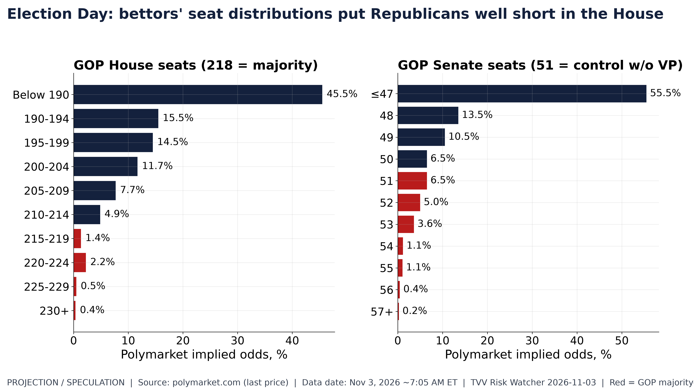
Polymarket GOP House and Senate seat-count distributions. Polymarket seat brackets: GOP House 215+ about 4%, Senate 51+ about 18%. Polymarket, Nov 3 7 AM ET. [Projection/Speculation; data as of Nov 3, 2026 ~7:05 AM ET] Source: polymarket.com data page
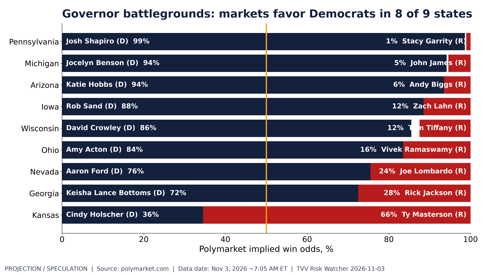
Governor battlegrounds: markets favor Democrats in 8 of 9 states. Polymarket governor odds: Democrats favored in 8 of 9 battlegrounds; Kansas leans GOP. Polymarket, Nov 3 7 AM ET. [Projection/Speculation; data as of Nov 3, 2026 ~7:05 AM ET] Source: polymarket.com data page
11. Tech-Metrics
- ★ Palantir beat and fell: Q3 revenue $2.313 billion (+96% y/y) vs $2.18 billion expected, adjusted EPS $0.44 vs $0.41; US commercial revenue ($984 million) passed US government revenue for the first time, and FY 2026 guidance rose to $8.530-8.534 billion. Shares still fell to $163.88 premarket (-8.11%, 6:58 AM ET), as investors focused on US commercial contract value growing just 11% y/y (Q2: +153%) and on valuation (see graph). Palantir · CNBC · MarketWatch
- ★ Apple: fiscal Q4 revenue rose 12% to $114.5 billion and iPhone revenue rose 17%, but Greater China ($17.54 billion) missed and December-quarter gross margin guidance of 45-46% fell short on memory costs; shares fell about 2-3% after hours in CEO John Ternus's first report. CNBC · TechNode
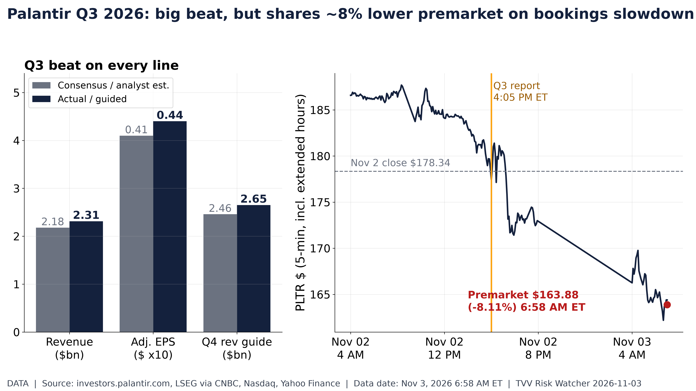
Palantir Q3 2026 results vs estimates and premarket move. Palantir beat ($2.313bn, $0.44); shares $163.88 premarket, -8.11%. Nasdaq, Nov 3, 2026 6:58 AM ET. [Data; data as of Nov 3, 2026 6:58 AM ET] Source: investors.palantir.com data page
12. AI Hypergrowth Risks
- ★ AI valuation test: futures show tech outflows extending after Monday's Nasdaq drop, Palantir is falling despite a beat, and AP flags growing concern about the cost of AI expansion. Hyperscaler, Oracle and Nvidia moves since Oct 27 show the market's split verdict on Q3 capex plans (see graph). AP · Yahoo Finance
- ★ Power as the bottleneck: OpenAI's 1 GW curtailable-load pledge in Georgia is a bid to win local approval for AI campuses as grid strain becomes a political issue on ballot day; the program is billed as national. The Verge · OpenAI
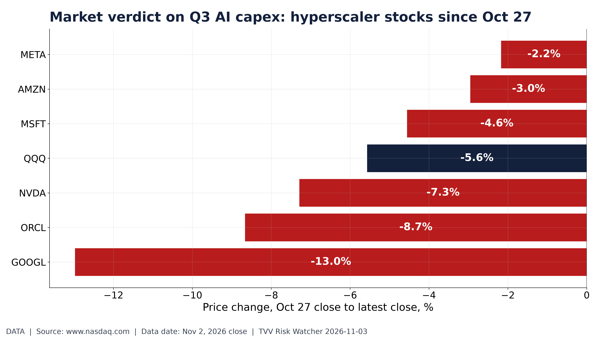
Market verdict on Q3 AI capex: hyperscaler stocks since Oct 27. Hyperscaler, Oracle and Nvidia share moves since Oct 27, spanning Q3 capex reports. Nasdaq, Nov 2, 2026 close. [Data; data as of Nov 2, 2026 close] Source: nasdaq.com data page
TECHVESTVENTURES ACTION-ALERT — November 3, 2026 see all graphs click TVV Risk Center
EDITOR — Michael Hentschel
Most news events require or spawn no action or reaction, some (but not many) are or become warnings. We draw attention to substantial lifestyle risks and market risks in particular, some created by Mid-Term Vote anxieties, Middle East tensions, vast over-indebtedness globally, and other events we track. Longer term but capable of causing sudden power surges as serious as the Carrington Event. Climate instability occasioned by long-term cyclical solar electro-magnetic flares, is becoming much more prominent and even more likely. New AI predictive analytics and pattern seekers are pointed in some of these directions, and we monitor imminent likelihood. Some readers might hedge and others might see opportunity. The above is not investment advice.